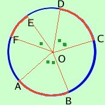

Relazione fra archi e corde
Vediamo ora un teorema che di solito passa quasi sotto silenzio, ma che per la sua importanza andrebbe invece ben evidenziato: i suoi risultati permettono di costruire la goniometria permettendoci di misuare gli archi in gradi e gli angoli in centimetri (radianti)
Teorema

In ogni circonferenza gli archi e gli angoli al centro che tali archi sottendono sono tra loro in proporzionalita' diretta
In proporzionalita' diretta significa che si conservano l'uguaglianza e la somma: in particolare significa:
- Se gli archi sono congruenti allora sono congruenti anche gli angoli al centro e viceversa
esempio:
essendo AB= CDsegue AOB^= COD^
e viceversa
- Se un arco e' doppio, triplo,quadruplo... di un altro anche l'angolo al centro corrispondente e' doppio, triplo, quadruplo, ... dell'angolo al centro corrispondente;
esempio:
essendo AB= 2 EF segue che AOB^= 2 EOF^
Se due insiemi di enti sono tra loro direttamente proporzionali allora le proprieta' che valgono per il primo insieme valgono anche per il secondo
|